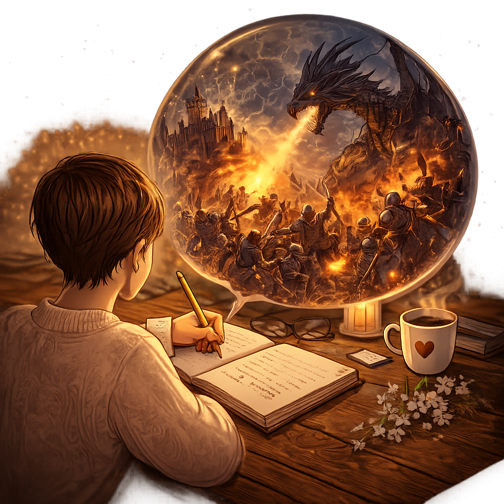

Psaní příběhů je pro mě něco, co mě opravdu baví a naplňuje. Je to svět, do kterého se mohu ponořit, když si potřebuji odpočinout nebo si srovnat myšlenky a emoce. Lásku k fantasy a středověku ve mně už od dětství probudili moji rodiče, kteří mě v této zálibě vždy podporovali a vedli mě k představivosti a čtení. Právě díky nim jsem si k těmto světům vytvořila silné pouto, které mě provází dodnes.